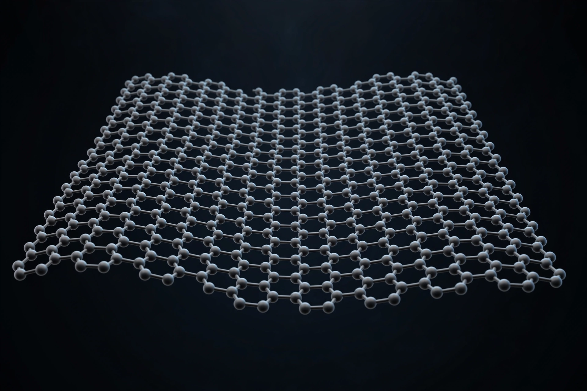

Graphene
| Structure | Single layer of carbon atoms in a hexagonal lattice |
|---|---|
| Discovered | 2004, University of Manchester |
| Key figures | Andre Geim, Konstantin Novoselov |

[Image: Artist's rendering of a graphene sheet: a hexagonal honeycomb lattice of carbon atoms]Graphene is a single layer (monolayer) of carbon atoms arranged in a tight hexagonal (honeycomb) lattice. It is an allotrope of carbon in the family that includes Graphite, carbon nanotubes and fullerenes, and can be visualised as one atomic layer peeled from a crystal of graphite.
Graphene was isolated and characterised in 2004 by Andre Geim and Konstantin Novoselov at the University of Manchester, a achievement for which they shared the 2010 Nobel Prize in Physics. Its exceptional electrical, mechanical and thermal properties — it is stronger than steel by weight, nearly transparent, and conducts electricity and heat superbly — have made it one of the most studied materials in modern science.
History
Single layers of graphite were discussed theoretically as early as 1947 (P. R. Wallace calculated their band structure) and observed in various forms for decades, but they were thought to be thermodynamically unstable in free-standing form. In 2004 Geim and Novoselov isolated flakes by repeatedly peeling graphite with adhesive tape — the 'Scotch tape method' — and demonstrated the electric field effect in them, launching graphene research worldwide.
Properties
Electrons in graphene behave like massless relativistic particles (Dirac fermions), giving rise to an unusual half-integer quantum Hall effect. Graphene's intrinsic tensile strength is about 130 GPa, making it the strongest material ever measured, while a monolayer absorbs only about 2.3% of visible light. Its electron mobility far exceeds that of silicon at room temperature, and its thermal conductivity is among the highest known.
Production and applications
Beyond mechanical exfoliation, graphene is produced by chemical vapour deposition on metal foils, by epitaxial growth on silicon carbide, and by chemical reduction of graphene oxide. Proposed and realised applications include flexible electronics, sensors, membranes for water filtration, energy storage in batteries and supercapacitors, and composite materials, although large-scale commercial adoption has been slower than early publicity suggested.
Related materials
Graphene's success sparked a broad field of two-dimensional materials: bilayer graphene (which at a 'magic angle' of about 1.1° becomes superconducting), hexagonal boron nitride, molybdenum disulfide and other transition-metal dichalcogenides, and van der Waals heterostructures assembled layer by layer.